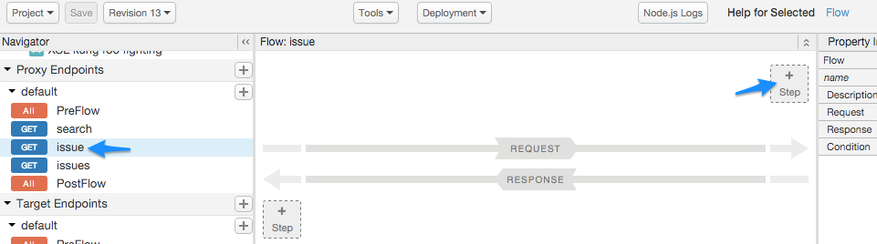
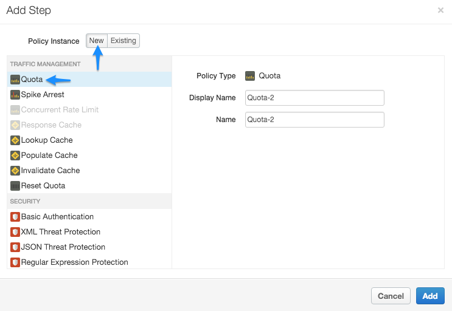
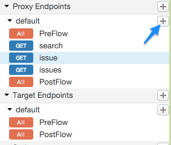
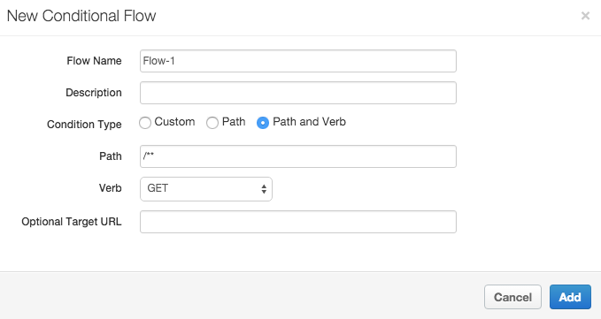
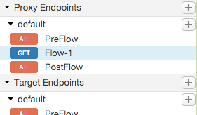

[toc]
Flows are the basic building blocks of API proxies. Flows enable you to program the behavior of an API by letting you configure the sequence in which policies and code are executed by an API proxy.
For a conceptual overview of flows, see http://docs.apigee.com/node/18261.
This topic describes how to create conditional flows and add logic (policies) to flows at a high level. The art of creating conditions involves more detail than what's covered in this topic. For that detail, see http://docs.apigee.com/node/15211 and http://docs.apigee.com/node/14723.
Edge comes with many different types of predefined policies to implement security, manage traffic, and manipulate messages. In addition, policies let you add your own custom code to completely customize message processing.
For example:
Once you have created a conditional flow, it is available for policy attachment. With the flow selected, click the + Step icon in the request or response diagram to add a new or existing policy to the flow.


By attaching the policy to the selected flow, you are configuring the API proxy to enforce the Quota policy only for requests made to that flow URI and verb combination. For example, if you attach the policy to the learn flow in the request, the following XML is generated in the code view of the proxy editor:
<ProxyEndpoint name="default"> ... <Flow name="issue"> <Description/> <Request> <Step> <Name>Quota-2</Name> </Step> </Request> <Response/> <Condition>(proxy.pathsuffix MatchesPath "/issue/**") and (request.verb = "GET")</Condition> </Flow> ... </ProxyEndpoint>
In this configuration, if a GET request comes in on the API proxy with a URI pattern of .../issue/** (/issue/ with anything in the URI after the last forward slash), quota is enforced on that API call.
Any policies attached to the PreFlow or PostFlow are always executed. However, the policies in a conditional flow are executed only if the flow's condition evaluates to true.
During the processing of a request and response, only one conditional flow is executed per segment--the first flow whose condition evaluates to true. That means you can have one conditional flow executed as part of each of the:
For example, the following ProxyEndpoint definition shows a conditional flow that is executed by the ProxyEndpoint on any HTTP GET request to the API proxy:
<ProxyEndpoint name="default">
<PreFlow>
<Request/>
<Response/>
</PreFlow>
<Flows>
<Flow name="Flow-1">
<Condition>request.verb="GET"</Condition>
<Request/>
<Response/>
</Flow>
</Flows>
<PostFlow>
<Request/>
<Response/>
</PostFlow>
...
</ProxyEndpoint>
Notice that the condition references the request.verb flow variable. A flow variable is named references that hold state information associated with an API transaction processed by Edge. Edge defines many state variables that you can reference.
RESTful services are collections of API resources. An API resource is a URI path fragment that identifies some entity that developers can access by calling your API. For example, if your service backend provides weather reports and weather forecasts, your API might define two conditional flows that map to those API resources: /reports and /forecasts. When an API call includes one of those resources in the URL, the condition evaluates to true and the logic attached to the conditional flow is executed.
App developers then access your resources by making requests to a URL in the form:
http://myAPIs.myCo.com/weather/reports
or:
http://myAPIs.myCo.com/weather/forecasts
In an API proxy, you can define a conditional flow that corresponds to a specific resource:
<ProxyEndpoint name="default">
<PreFlow>
<Request/>
<Response/>
</PreFlow>
<Flows>
<Flow name="Flow-1">
<Condition>(proxy.pathsuffix MatchesPath "/reports")</Condition>
<Request/>
<Response/>
</Flow>
<Flow name="Flow-2">
<Condition>(proxy.pathsuffix MatchesPath "/forecasts")</Condition>
<Request/>
<Response/>
</Flow>
</Flows>
<PostFlow>
<Request/>
<Response/>
</PostFlow>
...
</ProxyEndpoint>
In this example, you reference the proxy.pathsuffix flow variable, which contains the suffix portion of the URL used to access the API proxy. You can then attach different policies to the conditional flow for each resource.
In this brief example, you set up a flow that executes only when the request message is an HTTP GET.
To add a conditional flow, select the Develop view in the API proxy builder. Click the + icon in the desired endpoint.

The New Conditional Flow form lets you name the flow and configure a condition. In the following example, you add a simple condition that evaluates the HTTP of the request message for a GET verb (as opposed to PUT, POST, etc.) on any URI after the base path.

(Learn how to construct conditional statements in http://docs.apigee.com/node/14723.)
The new flow, called Flow-1, now appears in the Navigator menu.

Now observe the XML configuration for the ProxyEndpoint. Select Flow-1 in the Navigator menu.
You will see the following configuration.
<PreFlow name="PreFlow">
<Request/>
<Response/>
</PreFlow>
<Flows>
<Flow name="Flow-1">
<Request/>
<Response/>
<Condition>(proxy.pathsuffix MatchesPath "/**") and (request.verb = "GET")</Condition>
</Flow>
</Flows>
<PostFlow name="PostFlow">
<Request/>
<Response/>
</PostFlow>
The following topics provide more detail about constructing conditions and using variables: